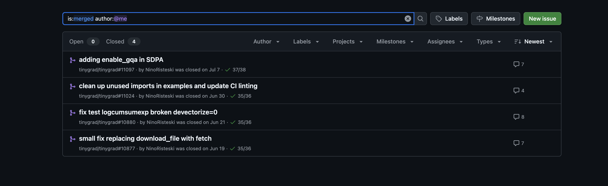

If you love building from scratch and care about high‑quality code, tinygrad is a great place to get your hands dirty and learn how a deep learning framework works. It’s deliberately minimalist—anti‑bloat—so small and clear changes go a long way. This post is the play‑by‑play of my first (4) merged PRs: what I changed, the feedback I got, and the habits that made reviews go smoothly.
I’m writing this because I wished something like this existed when I started — consider it as a small guide I wanted on day one. Along the way I built a tiny side project, tinypilot, to learn tinygrad by doing; if you’re starting out, this project can help you map the codebase faster.
One ground rule on AI (and code ownership): use AI to learn the codebase — to map the repo, explain helpers, find related files, and maybe suggest ideas. Don’t use AI to generate the code you will push. You should understand and own every line in your PR; tinygrad values clarity and intent over volume.
Before you contribute:
- Read the codebase: skim
tinygrad/andtest/, then trace one op end‑to‑end so you know the dataflow. Would suggest to start with tensor.py first. - Search Tinygrad Discord / prior PRs & issues: most beginner questions have been asked and answered. Find context before you ask. Don’t clutter the channels - it’s a dev focused only place to build tinygrad.
- Respect maintainers’ time: it’s open‑source, but core contributors and employees are not your tutors. Arrive with a minimal repro, a concrete change, and a small proposed diff. Think signal > noise.
- No “exploratory” PRs: drafts are fine if you already have a plan and started working on an improvement. Otherwise, prototype locally until you do.
Before you push, triple‑check quality:
- Run the test suite locally before pushing a PR for a review.
- Re‑read your diff like a maintainer: is there a canonical helper you should use? is the change minimal? any magic constants? are names and comments clear but sparse?
- Keep commits small and logically scoped — even if the PR is broad (new feature, upgrade etc). Granular commits help reviewers follow intent, leave targeted feedback, and bisect regressions when something breaks.
tl;dr: Ship tiny, test rigorously, triple‑check quality, explain clearly — and optimize for signal over noise, as I mentioned (very important).
How to ramp up fast:
- Start with a map, not a build: skim the repo tree, peek into
tinygrad/andtest/, and follow one op end‑to‑end. You’ll pick up the project’s idioms faster than any tutorial. - Make a tiny sandbox: spin up a scratch script or run a single narrow test so you can poke at tensors and helpers. Quick feedback beats reading everything.
- Prove it to yourself first: reproduce the issue or demonstrate the improvement locally. Sanity‑check edge cases (odd shapes, dtypes) before you push your code.
- Think like a maintainer: use native tinygrad helpers, avoid adding new dependencies, keep commits small, choose obvious names, explain changes simply, and be ready to dive deep when asked.
- Ship in small commits: even if the PR is broad, keep commits crisp and bisect‑friendly. Reviewers (and future you) will thank you.
PR 1 — Prefer the built‑in fetch over ad‑hoc download glue
Merged: Jun 19, 2025\ (#10877)
The situation: While reading the codebase to understand how things fit together, I found an example that used a local download_file plus an os.path.isfile check. It worked, but it duplicated what tinygrad already provides with fetch.
Review note: “Use
fetchdirectly. The extra existence check isn’t needed. Please try this on a clean environment and update the PR title to reflect the change.”
The change: Replace the custom logic with fetch(url, path) and remove the extra check. Keep the diff small and focused. Pretty basic, right? Yes. but you have to go through the codebase and see it. Also, if you want to contribute big, you should start small, like this PR.
Before
from tinygrad.helpers import getenv
def download_if_not_present(file_path: Path, url: str):
if not os.path.isfile(file_path):
download_file(url, file_path)
return file_path
# ...
download_if_not_present(checkpoint_path, checkpoint_url)
# ...
download_if_not_present(config_path, config_url)
download_if_not_present(weights_path, weights_url)
# ...
if audio_path == DEMO_PATH: download_if_not_present(DEMO_PATH, DEMO_URL)
After
from tinygrad.helpers import getenv, fetch
# ...
fetch(checkpoint_url, checkpoint_path)
# ...
fetch(config_url, config_path)
fetch(weights_url, weights_path)
# ...
if audio_path == DEMO_PATH: fetch(DEMO_URL, DEMO_PATH)
Using the built‑in fetch keeps every download going through one well‑known path. Fixes and improvements land in that single helper and benefit the whole repo. It also makes examples easier to read: people skimming the code instantly know what fetch does. Dropping the extra isfile check removes edge cases like partial files or racy checks that diverge across scripts. And because fetch is native to tinygrad, there’s no need for extra utilities or third‑party libraries — the dependency surface stays small.
What the review changed
The reviewer asked to use fetch directly, remove the redundant existence check, and verify on a clean environment. I also updated the PR title to describe the change precisely and deleted the local helper to avoid drift.
How I validated
I started by running ruff check locally to confirm the output matched what CI would see. Then I executed all the examples I’d touched to make sure I hadn’t broken anything. As a final test, I opened a throwaway PR that deliberately reintroduced an unused import and watched CI flag it immediately—proof the guardrail was working.
PR 2 — Fix logcumsumexp with DEVECTORIZE=0 (ordering matters)
Merged: Jun 21, 2025\ (#10880)
Discovery: I first saw the failure in the tinygrad Discord (#bug-reports), reported by George Hotz. I reproduced it locally and traced it through the logcumsumexp path.
The bug: With the devectorizer disabled, masked terms were hitting exp first, triggering inf * 0 -> NaN — a classic “mask too late” issue.
Review note: “Use a principled sentinel (dtype‑aware) and explain why it only appears with DEVECTORIZE=0.”
The change: apply the mask before exp, and replace the magic constant with dtype.min.
Before
ret = ((x_expand - x_cummax).exp() * mask).sum(-1).log() + x_cummax.squeeze(-1)
After
ret = mask.where(x_expand - x_cummax, dtypes.min(self.dtype)).exp().sum(-1).log() + x_cummax.squeeze(-1)
Masking before exp makes the result independent of execution order. Whether the kernel runs vectorized or scalarized, the “inf * 0” path doesn’t exist anymore. Using dtype.min also removes guesswork: it gives each dtype a sensible floor, so the logic holds for float16, bfloat16, and float32 without quiet overflows. Keeping huge values away from exp avoids NaNs from leaking into later ops. And because different devices can reorder work under the hood, doing the mask first keeps behavior consistent on CPU and GPU.
What the review changed
I proposed a large negative constant; review pushed me to use dtype.min instead, which ties the sentinel to the actual numeric range of the dtype. I also explained in the PR why only DEVECTORIZE=0 exposed the bug: scalarization changes evaluation order, so exp can run before the mask and create the inf * 0 path.
Why it matters
This turns the fix from a tweak into a rule that holds across modes and dtypes. The test now covers vectorized and scalarized paths, so refactors won’t quietly reintroduce NaNs.
How I validated
I reproduced the failure with the devectorizer turned off and odd shapes (e.g., [3, 5]). After the change, I compared results between modes and across dtypes to ensure they matched within tolerance and the dtype.min sentinel behaved as expected.
PR 3 — Lint the examples and keep them linted
Merged: Jun 30, 2025\ (#11024)
Discovery: While skimming examples/, I noticed a few files importing things they never used. Easy to fix — but without CI, the noise would come back.
Review note: “We don’t lint this directory. If we’re cleaning it, wire CI so it stays clean.”
The change: remove unused imports and extend ruff to check examples/, limiting it to unused‑import warnings to keep the signal high.
Before (snippet)
import os
import json # unused
import numpy as np # unused
After
import os
Ruff config delta (conceptually)
[tool.ruff]
extend-select = ["F401"] # unused imports only
src = ["tinygrad", "examples"]
Hooking the linter to CI is what keeps the cleanup from drifting. By limiting the rule to unused imports (F401), we keep the signal high without inviting a wall of nitpicks. Dropping stray imports also trims a bit of startup and memory in small scripts—tiny on its own, noticeable over many runs. Most importantly, the CI job makes the standard visible, so new patches arrive clean by default.
What the review changed
When I first opened this PR, it was just a straightforward cleanup—remove the unused imports and call it a day. The reviewer pushed me to go further: if we’re tidying up, let’s make sure the mess doesn’t come back. That meant wiring ruff into CI so it checks examples/ on every run. To keep the signal high and avoid a wave of unrelated nitpicks, I narrowed the rule to just F401 (unused imports). I also updated the src paths in the config so examples/ actually gets linted in CI.
How I validated
I started by running ruff check locally to confirm the output matched what CI would see. Then I executed all the examples I’d touched to make sure I hadn’t broken anything. As a final test, I opened a throwaway PR that deliberately reintroduced an unused import and watched CI flag it immediately—proof the guardrail was working.
PR 4 — Add enable_gqa to SDPA (+ tests)
Merged: Jul 7, 2025\ (#11097)
Discovery: I learned tinygrad was missing the enable_gqa knob (Grouped-Query Attention) from a Discord post where George Hotz pointed out that SDPA should have enable_gqa. That call-out made the gap obvious and pushed me to wire it up.
Review notes: “Why doesn’t the test assert the Torch flag?”. I updated the tests to use (and compare to) PyTorch’s
enable_gqawhen available.
The change: I extended the Tensor method signature to accept enable_gqa, and—when it’s set—repeat K and V across the head dimension to match Q. It’s a no-op when the head counts already match, and it raises a clear error when they don’t divide. Direct implementation from PyTorch.
Before
def scaled_dot_product_attention(self, key: Tensor, value: Tensor,
attn_mask: Tensor | None = None,
dropout_p: float = 0.0,
is_causal: bool = False) -> Tensor:
...
After
def scaled_dot_product_attention(self, key: Tensor, value: Tensor,
attn_mask: Tensor | None = None,
dropout_p: float = 0.0,
is_causal: bool = False,
enable_gqa: bool = False) -> Tensor:
if enable_gqa:
# repeat K/V heads to match Q heads (GQA)
key = key.repeat_interleave(self.shape[-3] // key.shape[-3], dim=-3)
value = value.repeat_interleave(self.shape[-3] // value.shape[-3], dim=-3)
...
Test vibe
# parity with torch when enable_gqa=True
lambda x, y, z: torch.nn.functional.scaled_dot_product_attention(x, y, z, enable_gqa=True)
lambda x, y, z: Tensor.scaled_dot_product_attention(x, y, z, enable_gqa=True)
# error path when shapes don't divide cleanly
self.helper_test_exception([...],
lambda x,y,z: torch.nn.functional.scaled_dot_product_attention(x,y,z),
lambda x,y,z: Tensor.scaled_dot_product_attention(x,y,z, enable_gqa=True),
expected=(AssertionError, RuntimeError, ValueError))
Implementing GQA by repeating K/V heads is simple and transparent, and it works across devices without extra dependencies.
What the review changed
After feedback, I added a direct Torch comparison in the test when the local version exposes enable_gqa, cleaned up small style issues, and noted the supported Torch versions in the PR text so the test wouldn’t flap depending on the environment.
How I validated
I checked shapes and basic invariants with the flag on and off across common head counts, then compared outputs to PyTorch where available (with reasonable tolerances). I also skimmed call sites to ensure the added keyword didn’t break existing usage.
Summary
If you’re looking for the shortest path to your first contribution, it’s this: Don’t search shortcuts. Read the code and tests, start tiny, and make changes that are easy to verify. Use AI to learn the map of the repo, not to write your diff. Arrive with a clear problem statement, a minimal fix, and proof it works.
Keep the surface area small. Prefer native tinygrad helpers over one‑off utilities, avoid adding dependencies, and delete code when it simplifies the flow. When you clean something up, protect it with a guardrail (CI/lint/test) so it stays clean next week.
Make reviews easy. Write in plain language, keep commits focused, and explain what changed and why in two sentences. Search Discord and past PRs before asking questions, and respect maintainers’ time by bringing signal, not noise. Do this a few times and you won’t just ship patches — you’ll start thinking like a tinygrad contributor.